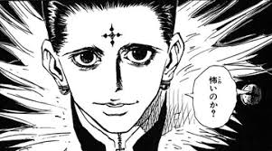
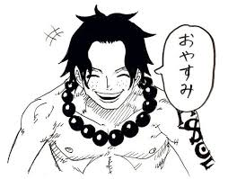

HunterxHunter
>
crollo lucifer es un estratega y calculador

crollo lucifer es un estratega y calculador

Portgas D. Ace, conocido como "Puño de Fuego", es un personaje fundamental en One Piece, hijo del Rey de los Piratas, Gol D. Roger, y hermano jurado de Luffy y Sabo

Neon Genesis Evangelion es una de las franquicias de anime más influyentes de la historia, creada por Hideaki Anno y el estudio Gainax en 1995